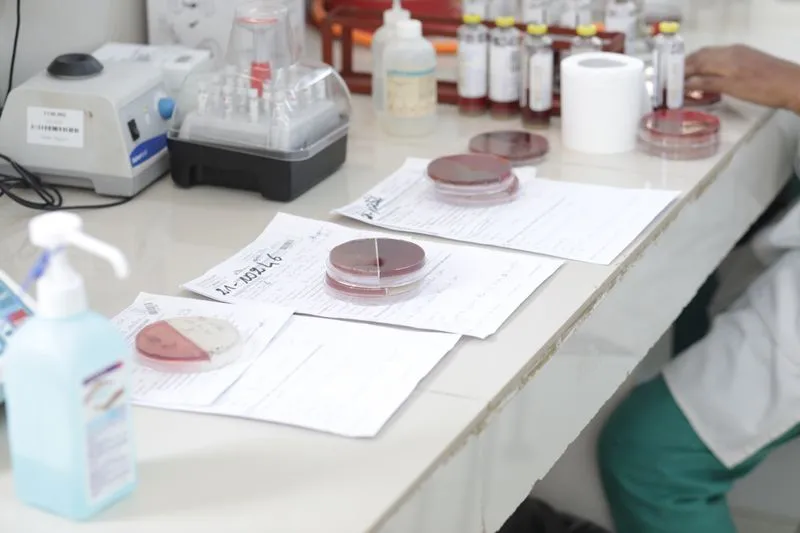
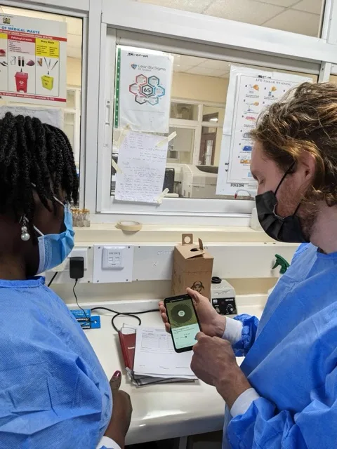
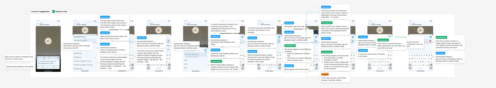
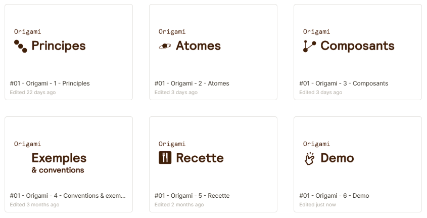
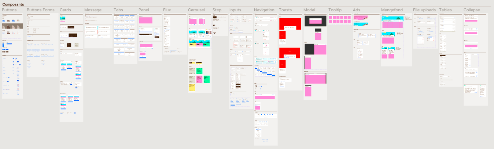
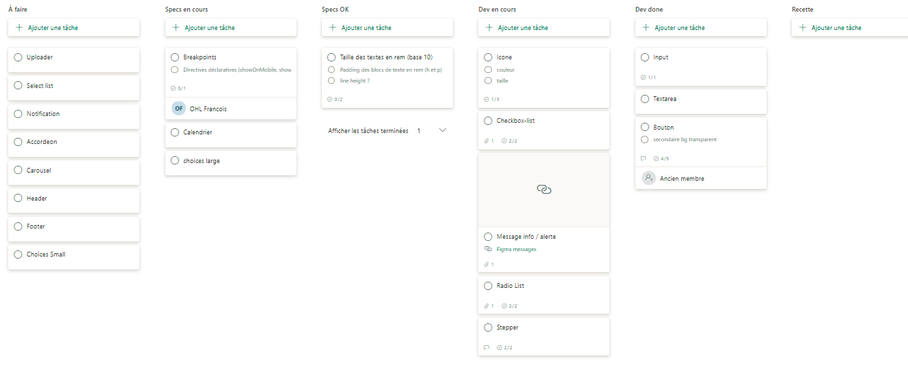
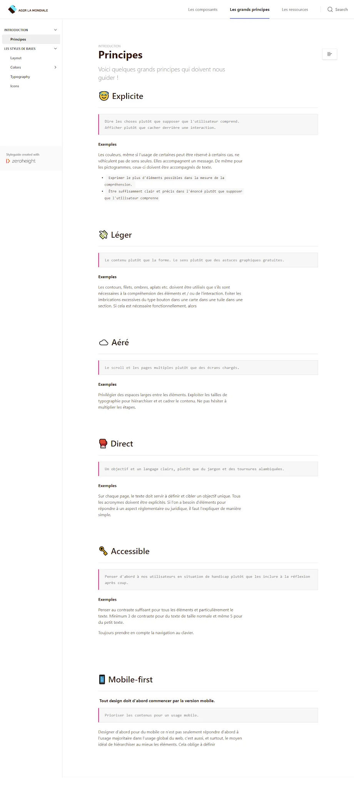
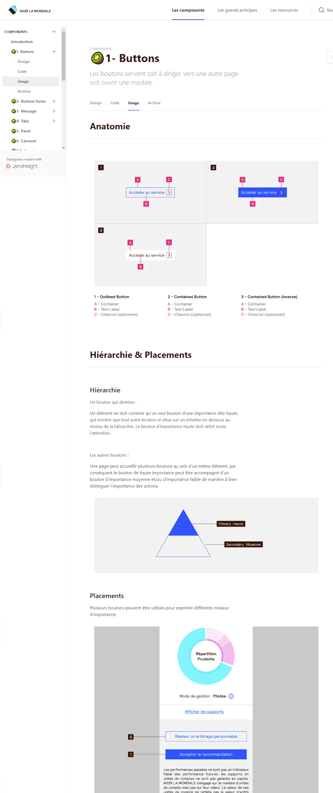

Open to full-time roles & advisory projects
À l'écoute d'opportunités — CDI & missions
I bring clarity and simplicity to demanding environments.
Je rends lisibles et intuitifs les environnements les plus complexes.
Senior product designer specialized in information architecture, systemic design, and accessibility. I choose projects that create genuine, positive impact — currently designing a clinical tool for MSF's fight against antimicrobial resistance.
Senior product designer spécialisé en architecture de l'information, design systémique et accessibilité. Je choisis des projets à impact concret — actuellement en mission chez MSF sur un outil médical dédié à la lutte contre l'antibiorésistance.
Design Approach & Principles
Approche & principes
I design simple, reliable digital products built for real-world use and tested against complex constraints.
Je conçois des produits numériques simples et fiables, pensés pour des usages réels et éprouvés face à des environnements complexes.
01
Inclusive
Inclusif
Inclusivity starts with solid interface foundations: deliberate contrast, legible type, and intuitive layouts designed for broad usability.
L'inclusivité commence par les fondamentaux d'interface : contrastes soignés, typographies lisibles et navigation évidente pour tous les profils d'utilisateurs.
02
Systemic
Systémique
I build resilient architectures and modular design systems, mindful of their technical footprint and broader social or environmental impact.
Je conçois des architectures pérennes et des design systems modulaires, attentifs à leur empreinte technique et à leur impact social ou environnemental au sein de l'organisation.
03
End-to-end continuity
De bout en bout
I bridge research, strategy, and engineering, working hand-in-hand with developers and domain experts through to final production.
J'assure le lien continu entre recherche, stratégie et intégration, en travaillant main dans la main avec les développeur·euse·s et les expert·e·s métier jusqu'à la mise en production.
04
Collective
Collectif
Design is never done in silos: I mentor and align design teams, while actively engaging user communities throughout co-design.
Le design n'est jamais un acte isolé : j'anime et synchronise les équipes de design, tout en impliquant activement les communautés d'utilisateurs dans la co-conception.
Featured Projects
Projets phares
Two case studies showcasing my approach to complex, highly constrained environments.
Deux études de cas illustrant ma démarche face à des environnements complexes et exigeants.
Origami — Scaling the Design System
Origami — Industrialisation du design system
Professional Experience
Parcours professionnel
Over a decade of design experience leading user research, information architecture, and UI tooling.
Plus de dix ans d'expérience en design, pilotant la recherche utilisateur, l'architecture de l'information et l'outillage UI.
Freelance Lead Product Designer (Antibiogo)
Lead Product Designer Freelance (Antibiogo)
MSF / AntibiogoI lead ongoing product design for the Antibiogo medical device app, conducting continuous user research, designing new features, and shaping the UX deployment strategy (localization, lab training).
J'accompagne l'évolution de l'application Antibiogo (dispositif médical) : recherche utilisateur continue, conception de nouvelles fonctionnalités et stratégie UX pour le déploiement sur le terrain (localisation, formation des laboratoires).
Lead Product Designer (Antibiogo)
Lead Product Designer (Antibiogo)
MSF FoundationI led the design for the Antibiogo Android medical app under IVDD/IVDR regulatory certifications. I designed the core user journeys, conducted laboratory field research, built the design system in close sync with engineering, and contributed to usability validation studies with an external partner.
J'ai piloté le design de l'application Android Antibiogo sous certification médicale IVDD/IVDR. J'ai conçu les parcours clés de l'application, mené la recherche terrain en laboratoire, structuré le design system en lien étroit avec l'équipe tech et contribué aux études d'usabilité avec un cabinet spécialisé.
Senior Product Designer
Senior Product Designer
AatlantideI conducted UX/UI audits on core dental and medical SaaS workflows (billing, patient history) to identify usability friction points. Alongside this, I initiated the foundations of a design system and helped establish UI best practices across the team.
J’ai réalisé des audits UX/UI sur les parcours clés des plateformes SaaS praticiens (facturation, historique patient) pour identifier les points de friction. En parallèle, j’ai amorcé les fondations d’un design system et cadré les premières bonnes pratiques de conception d’interface pour l’équipe.
Product Designer (UX/UI)
Product Designer (UX/UI)
AG2R LA MONDIALEI designed customer web portals serving 15 million policyholders. I restructured cross-service information architecture to unify fragmented portals into a seamless experience across desktop and mobile, led co-design workshops, and spearheaded the launch and rollout of the "Origami" design system.
J'ai conçu les espaces clients web du groupe au service de 15 millions d'assuré·es. J'ai unifié l'architecture de l'information pour lier plusieurs services cloisonnés en une navigation fluide (desktop et mobile), animé les ateliers de co-conception et piloté le lancement du design system « Origami ».
Academic Projects
Projets Académiques
Gobelins, l'école de l'imageI authored a research thesis: "The role and ethics of designers in accessibility and inclusion." I conceptualized and designed, in a team, "Dans les pas de Picasso," a responsive interactive exhibition for the Musée Picasso-Paris (student project).
J'ai rédigé un mémoire de recherche : « Le rôle et l'éthique des designers dans l'accessibilité et l'inclusion ». J'ai conceptualisé et conçu, en équipe, « Dans les pas de Picasso », une installation d'exposition interactive réactive pour le Musée Picasso-Paris (projet étudiant).
Older Professional Path
Parcours professionnel antérieur
Communication, Web Design & Front-EndA decade of earlier experience spanning graphic design, art direction, and front-end development, prior to specializing in product design. Dix ans d'expérience préalable entre design graphique, direction artistique et intégration web, avant ma spécialisation en product design.
Communications Officer + Web Designer
Chargé de communication + Web designer
Crédit Agricole Sud Rhône AlpesCommunications Officer
Chargé de Communication
CR&ON ArchitectesContent & Community Manager
Content & Community Manager
Freeride World TourEditorial Writer
Rédacteur
Nivéales média (Snowsurf & Ski Magazine)Get in Touch
Contact
I am open to senior product design roles, consulting on complex product challenges, and teaching opportunities. Naturally curious and versatile, I thrive on tackling demanding problems: let's connect.
Je suis disponible pour des rôles de Product Designer senior, du conseil sur des problématiques produit complexes ou des interventions pédagogiques. Curieux et polyvalent, j'aime m'emparer de sujets exigeants : discutons de vos projets.
francois.ohl@gmail.comAntibiogo — Android Mobile Medical Device
Antibiogo — Dispositif médical mobile sous Android
The Challenge
Le Défi
For over 3 years, I led the user experience and product design of Antibiogo, an offline Android medical device certified under IVDD (with IVDR certification in progress), developed by the MSF Foundation to combat antimicrobial resistance. The primary challenge was bridging international clinical microbiology standards (EUCAST and CLSI guidelines) with the frontline realities of resource-limited laboratories: diverse training and ingrained bad practices to address constructively, full standalone autonomy without any remote server, and zero-tolerance clinical safety requirements.
Pendant plus de 3 ans, j'ai piloté l'expérience utilisateur et la conception produit d'Antibiogo, une application médicale Android certifiée IVDD (et en cours de certification IVDR), développée par La Fondation MSF pour lutter contre l'antibiorésistance. Le défi central : concilier l'état de l'art de la microbiologie clinique (normes internationales EUCAST et CLSI) avec les réalités de terrain dans les laboratoires de pays à ressources limitées : niveaux de compétence hétérogènes et mauvaises pratiques courantes à corriger avec pédagogie, fonctionnement 100 % autonome sans serveur distant et sécurité clinique absolue.
Methodology & Action
Méthodologie & Actions
- Research & ongoing discovery: Blending on-site laboratory observations with remote discovery protocols (moderated usability tests and surveys) across international user teams.
- UX strategy & risk mitigation: Balancing intentional interface friction against clinical task criticality to prevent diagnostic errors without burdening routine operations.
- Technical handoff & interaction specs: Defining detailed Android interaction guidelines (native OS behaviors, focus states, virtual keyboard, and edge cases).
- Design system & leadership: Led the full component overhaul while supervising an UI designer: driving the migration from Material 2 to Material 3, updating typography, refreshing brand colors, and expanding the functional UI palette.
- Recherche & immersion continue : combinaison d'observations terrain en laboratoire et d'un protocole d'écoute à distance (tests modérés et questionnaires) auprès d'équipes utilisatrices réparties à l'international.
- Stratégie UX & arbitrage du risque : dosage précis de la friction d'interface selon la criticité clinique des tâches, pour sécuriser le geste sans ralentir le diagnostic au quotidien.
- Spécifications techniques & Handoff : cadrage rigoureux des règles d'interaction pour le développement Android (comportements natifs de l'OS, gestion du focus, clavier virtuel, cas limites).
- Design system & encadrement : direction de la refonte globale des composants et encadrement d'une UI Designer : pilotage de la migration de Material 2 vers Material 3, modernisation typographique, refonte des couleurs de marque et extension de la palette fonctionnelle.
Field research & contextual immersion: Direct observations under real benchtop conditions in partner laboratories (outside the MSF network and prior to Antibiogo adoption). The goal was to understand the day-to-day realities of low-resource settings (LMICs): frequent supply shortages, mixed equipment standards, varied staff training levels, and physical handling constraints around bacterial cultures.
Continuous discovery, risk reduction & product iterations: To maintain a steady feedback loop without relying on frequent travel, I set up a structured remote testing protocol combining surveys and moderated sessions with microbiologists and lab technicians.
This approach directly steered design decisions across key workflows, addressing observed usability bottlenecks and clinical safety requirements:
- Omission risk reduction: adding an explicit confirmation step for the count of tested antibiotics during disk detection.
- Reading efficiency: improving workflows for bacterium identification and inhibition zone readouts.
- Decision clarity: redesigning result views within the app, along with print and export layouts for prescribing physicians.
Recherche terrain & immersion contextuelle : Observations directes en conditions réelles de paillasse dans des laboratoires tiers (hors réseau MSF et sans Antibiogo). L'objectif était d'appréhender la réalité des environnements à ressources limitées (LMICs) : ruptures d'approvisionnement régulières, hétérogénéité des équipements, niveaux de formation variables et contraintes physiques de manipulation au-dessus des cultures bactériennes.
Veille continue, réduction des risques & itérations produit : Pour maintenir une boucle de retours constante sans dépendre de déplacements sur place, mise en place d'un protocole d'enquêtes structurées et de tests modérés à distance avec des microbiologistes et technicien·nes de laboratoire.
Cette démarche a guidé les arbitrages de conception sur plusieurs chantiers clés, motivés par les frictions d'usage et les exigences de sécurité clinique :
- Réduction du risque d'oubli : confirmation systématique du nombre d'antibiotiques testés lors de l'étape de détection.
- Efficience de lecture : amélioration des parcours d'identification des bactéries et des mesures de zones d'inhibition.
- Clarté décisionnelle : refonte de l'affichage des résultats in-app et refonte des gabarits d'export et d'impression pour les médecins prescripteurs.


UX Decision Matrix: Risk & Friction
Matrice de décision UX : Risque & Friction
Rare Phenotype Detection
Détection d'un phénotype rare
Safety-critical & rare event: Triggering a hard visual interrupt and requiring
explicit confirmation with contextual guidance to prevent misdiagnosing critical bacterial
resistance.
Risque critique & événement rare : déclenchement d'une alerte visuelle bloquante
avec confirmation explicite requise et rappel pédagogique pour prévenir toute erreur critique
de diagnostic face à une antibiorésistance majeure.


Antibiotic Validation
Validation des antibiotiques
Safety-critical & daily routine: Semi-automated verification flow requiring
manual confirmation of drug names and measured inhibition diameters to prevent blind automatic
rubber-stamping.
Risque critique & routine quotidienne : processus semi-automatisé imposant la
confirmation manuelle des noms de disques et diamètres pour empêcher l'acceptation automatique
et aveugle des propositions.


Patient & Sample Metadata
Métadonnées du patient et de l'échantillon
Flexible, non-blocking input for optional fields (age, ward, sample ID),
streamlining the workflow by eliminating unnecessary administrative friction.
Saisie fluide et non bloquante des informations optionnelles (âge, service,
identifiant), permettant de se concentrer sur l'analyse sans imposer d'étapes
superflues.

Quality Control (QC)
Contrôle Qualité (CQ)
Streamlined interaction steps on repetitive validation tasks to prevent
cognitive fatigue while preserving mandatory regulatory traceability.
Allègement mesuré des interactions sur une tâche récurrente de validation pour
réduire la fatigue cognitive tout en garantissant la traçabilité.
Technical Interaction Specs: Detailed handoff rules for Android engineering — keyboard focus management, layout stability, simultaneous state transitions, and native back-behavior handling.
Spécifications techniques d'interaction : Définition précise des règles de développement pour l'équipe Android — gestion dynamique du clavier virtuel, transitions simultanées d'interface, positionnement des notifications et respect des comportements natifs de l'OS.


The Outcome
Le Résultat
A robust, certified medical tool deployed daily across demanding laboratory environments worldwide, empowering practitioners to obtain reliable diagnostics independently of any remote server.
Un outil médical robuste et certifié, utilisé au quotidien dans des laboratoires aux contextes exigeants à travers le monde, qui permet aux praticien·nes d'obtenir des diagnostics fiables sans dépendre d'un serveur distant.
Origami — Scaling the Design System
Origami — Industrialisation du design system
The 4 Rollout Steps
Les 4 étapes du déploiement
As the first to introduce the design system concept within the organization, I built the business case alongside the Tech Lead: estimating the cost of recurrent redundant development and scaling efficiencies across customer portals. This data-driven approach convinced leadership and secured the budget to kick off a dedicated team
Premier initiateur du sujet au sein du groupe, j'ai structuré l'argumentaire économique avec le Tech Lead : chiffrage du coût des redéveloppements récurrents et gains d'échelle sur les parcours clients. Cette démarche chiffrée a permis de convaincre le management et d'obtenir le budget pour lancer une équipe dédiée.
Designed an end-to-end system of over 50 modular components integrating typography, grid layouts, variants, and interactive states. This foundation accommodated evolving brand identity guidelines while ensuring visual consistency across various customer portals.
Conception d'un système complet de plus de 50 composants modulaires intégrant typographies, grilles, variantes et états interactifs. Ce socle a permis d'absorber les évolutions de l'identité visuelle de la marque tout en sécurisant la cohérence graphique entre les différents espaces clients.
Component Architecture: Dedicated Figma libraries structured from foundational principles to production-ready modular components.
Architecture des composants : Organisation des librairies Figma, des principes fondamentaux aux composants modulaires prêts pour la production.


Acted as joint Product Owner alongside the Tech Lead within a dedicated agile squad: backlog prioritization, interaction specs, and delivery of foundational components over an initial 8-week cycle. Development was subsequently rolled out to product teams under design governance.
Rôle de Product Owner conjoint aux côtés du Lead Dev au sein d'une micro-équipe agile dédiée : priorisation du backlog, spécifications et livraison des composants de base sur un cycle initial de 8 semaines. Le développement a ensuite été étendu aux équipes produit sous gouvernance design.
Sprint & Backlog Management: Dedicated Kanban board used to prioritize design specifications and coordinate front-end delivery.
Pilotage des sprints et backlog : Tableau Kanban dédié pour prioriser les spécifications design et coordonner les livraisons techniques front-end.

In parallel, deployed live documentation on Zeroheight to document usage guidelines, accessibility standards, and interactive behaviors. Results: a sharp drop in back-and-forth between design and engineering, tighter brand compliance, and significantly faster onboarding for new designers joining the team.
En parallèle, déploiement d'une documentation vivante sur Zeroheight pour consigner les règles d'usage, principes d'accessibilité et comportements interactifs. Résultats : réduction des allers-retours récurrents entre design et dev, meilleur respect des contraintes de marque et accélération nette de l'onboarding des nouveaux designers dans l'équipe.
Design Guidelines & Usage Rules: Zeroheight documentation platform centralizing design principles and component usage rules.
Principes directeurs et règles d'usage : Documentation vivante Zeroheight centralisant les principes de conception et les règles d'intégration des composants.


Retrospective Analysis
Analyse rétrospective
Reflecting on the rollout of the Origami Design System over its lifecycle.
Retour sur le déploiement du Design System Origami tout au long de son cycle de vie.
What worked well
Ce qui a fonctionné
- Starting with lightweight, highly reusable base tokens.
- Progressively introducing complex layouts as product teams gained maturity.
- Commencer avec de petits tokens de base hautement réutilisables.
- Ajouter progressivement des mises en page complexes à mesure que les équipes gagnaient en maturité.
Areas of improvement
Axes d'amélioration
- Involving the brand and communications team from day one to anticipate identity alignment issues.
- Establishing an open contribution model earlier on for other engineering squads.
- Impliquer l'équipe communication & marque dès le cadrage initial pour anticiper les conflits sur les éléments d'identité graphique.
- Mettre en place un modèle de contribution plus ouvert pour les autres équipes de développement.